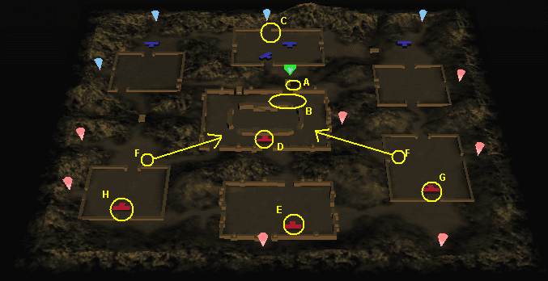

|  1.Ａにいる武将を倒す。 2.Ｂ地点に孫堅が出てくるので、倒す。(馬に乗っていないのならば、彼の馬を奪うこと。) 3.Ｃ地点に孫堅と武将が一人出てくるので、倒す。 4.Ｄにいる黄蓋を倒す。(扉が開けて、奥へ進めるようになる。) 5.Ｆから太史慈、周泰がくるので余裕があれば倒す。 6.Ｅへ移動し、孫堅を倒す。 7.孫策が大将となるので、彼を見つけて倒す。(たぶんＤ地点にいる。) また、太史慈、周泰を倒していなければ倒す。 8.孫権が大将となるので、倒す。(たぶん左のＦのあたり。) 9.孫尚香が大将となるので、倒す。(たぶん、右のＦの矢印の先端付近。) 注1 スタート地点が中央であってもなくても、左右の味方の援護へ向かわず、敵将を倒すことを優先すること。 注2 Ｅ地点で孫堅を倒す前に、孫策、孫権、孫尚香を倒しても意味がないので無視すること。 |